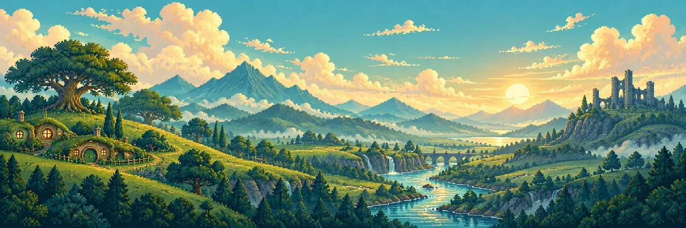
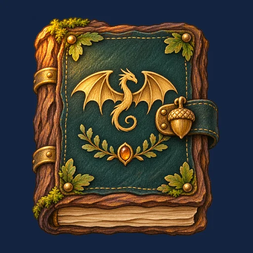
Lek och lär i Himlaskären
Fjäll och VingeDraklekar
Arton små lekar med bokstäver, siffror, former och pussel. Ditt barn spelar helt själv, utan att kunna läsa, och samlar 144 målade vänner på vägen.
Så ser det ut
Stora bilder, inga ord att läsa
Varje knapp är en symbol, och allt viktigt läses upp med en varm, inspelad svensk berättarröst. Spelet går vidare av sig självt efter varje rätt svar.
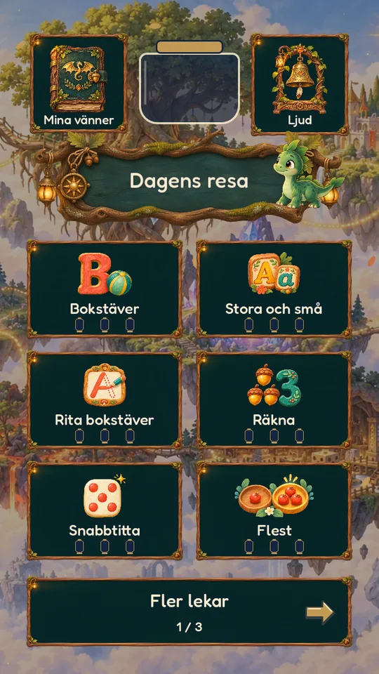
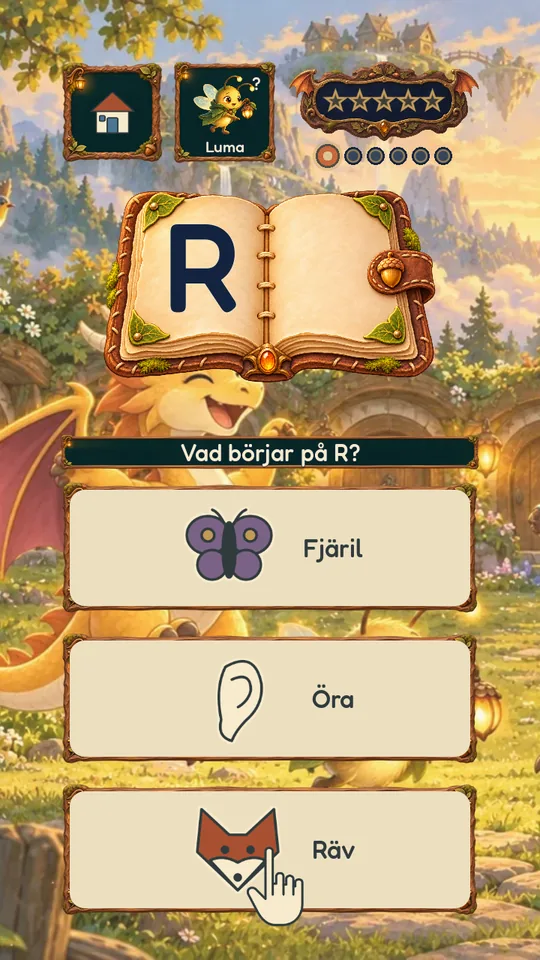
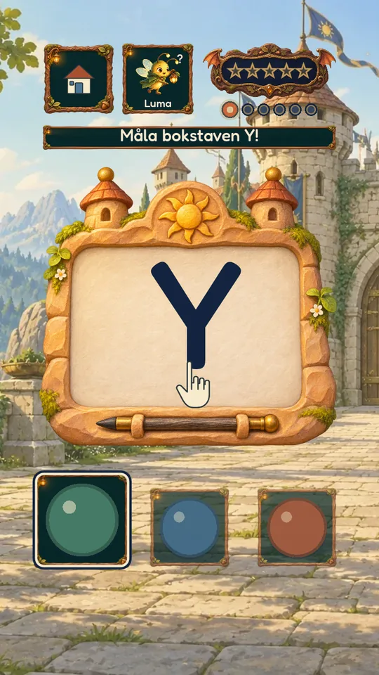
Arton lekar
Ett skär för varje lek
Varje lek bor på ett eget skär i Himlaskären, med egen målning och egen musik. Lekarna följer det förskolan och förskoleklassen arbetar med.
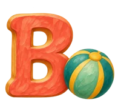
BokstäverVad börjar på bokstaven?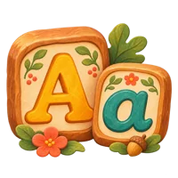
Stora och småVersaler och gemener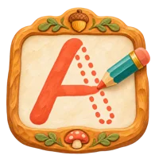
Rita bokstäverMåla med fingret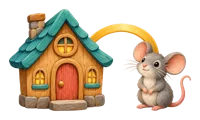
RimmaHur slutar ordet?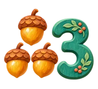
RäknaTryck och räkna högt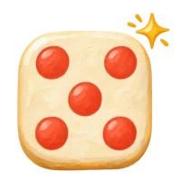
SnabbtittaSe antalet utan att räkna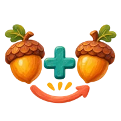
PlusLägga ihop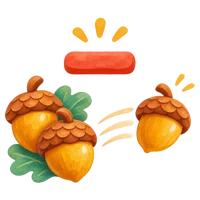
MinusNågra flyger iväg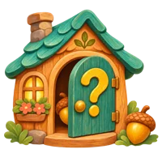
GömmaHur många gömmer sig?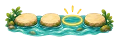
StenstigenTalraden fram och bak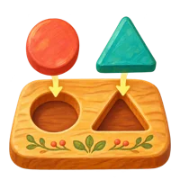
FormerVilken form passar?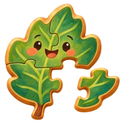
PusselVänner i bitar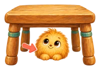
Var är Pytte?På, under, bakom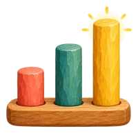
Längst och kortastJämföra och mäta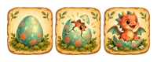
Först och sistTid och ordning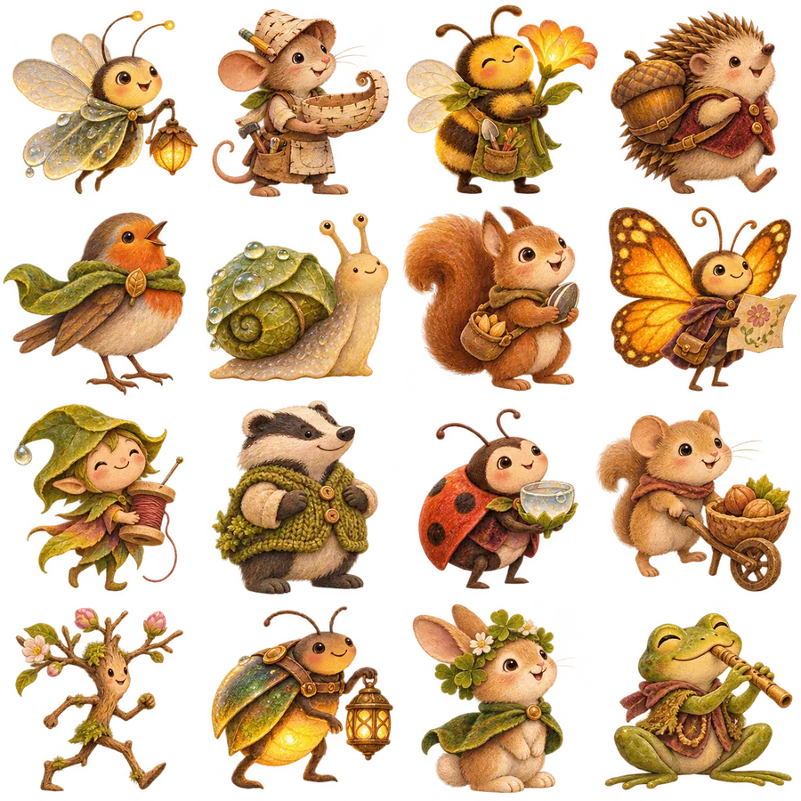
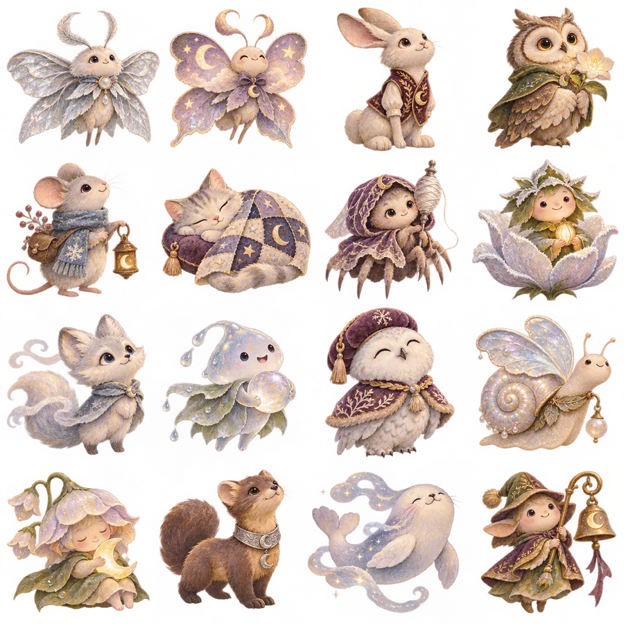
Att samla
144 vänner att träffa
Efter fem lösta uppgifter kommer en liten fest: barnet får en ny vän till sitt vänalbum, och en lykta tänds på skäret på kartan.
Varje vän har ett eget namn, ett eget hem och en egen liten berättelse. Igelkottar med lyktor, sniglar med hus av mossa, möss i stickade mössor. Några av dem dyker upp igen i Glödvägen.
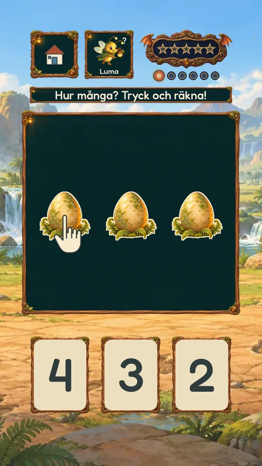
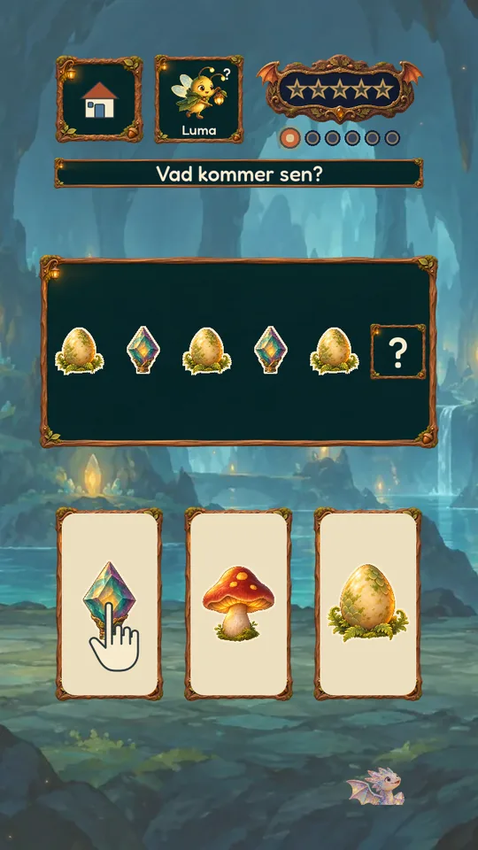
Lagom svårt
Följer ditt barn
Svårigheten anpassar sig av sig själv. Går det lätt kommer ett steg upp, går det tungt blir det tyst lite enklare. Bokstäver och tal som är svåra kommer oftare.
Fel svar ger bara en liten gungning och en ny chans. Aldrig ett rött kryss, aldrig ledsna ljud. Efter två försök flyger lysflugan Luma fram och visar.
Dagens resa
Tre lekar om dagen, med Luma som guide
Lumas målade reseskylt föreslår tre lekar i rad: två där det går tyngst just nu, och en ny. Så blir varje stund lagom lång, och barnet övar det som behövs utan att märka det.
För dig som vuxen
Tryggt att lämna över
Draklekar är gjort för att ditt barn ska kunna spela helt själv, utan din hjälp.
- Ingen reklam, inga köpInga annonser och inga länkar som leder ut ur appen.
- Ingen datainsamlingInga konton. Stjärnor och framsteg sparas bara på enheten.
- Fungerar utan internetPerfekt i bilen, på tåget eller på stugan.
- VuxenlägeHåll fingret på stjärnraden i tre sekunder och se vad som är svårast just nu.
- Upp till tre barnVarje barn väljer sitt eget djur och får egna framsteg.
- Stora tryckytorByggt för små fingrar, med hemknappen alltid på samma ställe.